Spatial Data Wrangling in QGIS
Author: Ki Tong
Many types of sources used by social scientists are inherently spatial where spatial data is treated as a primary variable. We could be interested in how for instance, tree density is associated with indicators of wellbeing; environmental injustice where poorer neighbourhoods are associated with worse environmental conditions such as noise. There are different methods looking at these research questions.
One of the methods is to ‘bin’ disparate spatial datasets into a uniform grids using QGIS. This process allows you to standardise geographic information, making it possible to compare variables that were originally collected in different formats and to perform further inferential analysis.
This tutorial is going to walk you through the steps to create these ‘bins’ and to perform relevant visualisation and preliminary statistics that hopefully could aid in performing your own research questions. Here are the lesson goals:
- To aggregate vector and raster information into polygons to aid in the visualisation of geospatial patterns.
- To construct polygon bins and apply spatial join techniques, aggregating vector-based point data to create a multi-variable dataset.
- To extract and align raster data with polygon bins using zonal operations to enhance multi-variable datasets.
- To export aggregated datasets for further statistical analysis or rapid exploration using QGIS consoles.
This tutorial forms part of the training in geospatial analysis and builds upon foundational skills in GIS, particularly adding layers and managing Coordinate Reference Systems (CRS).
Before beginning, please download SilentDiscoGeo (.zip). This tutorial assumes you are working with this specific set of environmental data relating to the City of Edinburgh and wish to aggregate this information for statistical analysis.
After downloading the ZIP folder, please move it to your desktop for easy access and reference as you follow the tutorial. You will also need QGIS installed on your computer; please download the latest version from [here].
Introduction
What is spatial aggregation, and why do we aggregate spatial information?
Spatial aggregation is the process of grouping individual data points—such as tree locations or noise sensor readings—into summarised geographic units. Unlike standard data grouping (such as sorting sales by month), spatial aggregation utilises locational relationships to reveal patterns, trends, and clusters that are invisible at the individual point level.
To put this into context, let’s open the folder you downloaded. Go to your desktop and open the unzipped SilentDiscoGeo folder. Inside, open ProjectGeo.qgz in QGIS (you should be able to open this by simply double-clicking the file if you have QGIS installed).
Once the project is open, follow these steps to add your layers:
1. Add the Trees layer:
- Go to Layer > Add Layer > Add Vector Layer.
- Click the three dots (browse button) next to the "Source" box.
- Navigate to the Vectors > Trees folder and select Tree.shp.
- Click Open, then Add.
2. Add the Edinburgh Ward Boundaries:
- To provide spatial context, go to Layer > Add Layer > Add Vector Layer.
- Click the three dots next to the "Source" box.
- Navigate to the Vectors folder and select Edinburgh_Ward_Boundaries.shp.
- Click Open, then Add.
When opening QGIS, you will see a warning sign that says something like the screenshot below,
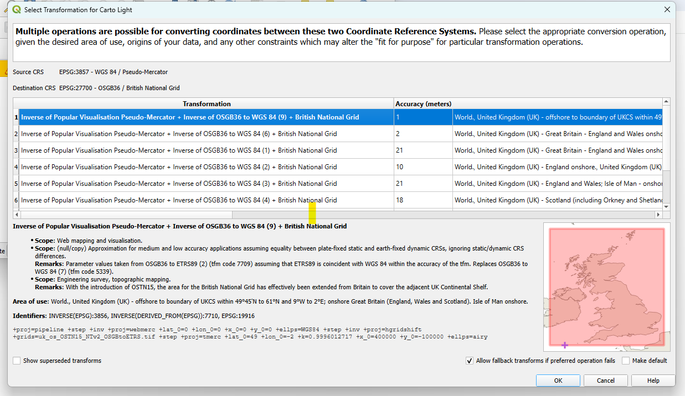
This happens because Carto Light, the basemap, is WGS84 while the default in the current QGIS project for this tutorial is the British Grid. The QGIS project has been set to be at the right Coordinate Reference System (CRS) already. Therefore, please click 'OK' and continue.
Your QGIS workspace should now look similar to the image below, with the points overlaid on the boundary map.
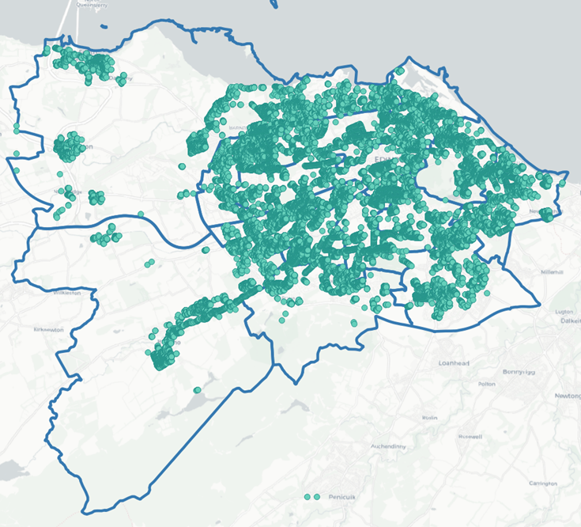
What conclusions can you draw regarding the distribution of trees across Edinburgh’s ward boundaries? You will likely realise immediately that this is quite difficult to determine because the points overlap, making it nearly impossible to visualise patterns across the different boundaries. Therefore, we must find a more effective way to visualise the distribution of trees in Edinburgh, which is where spatial aggregation becomes essential.
It would be helpful if we could represent the number of trees within each ward boundary as a Choropleth Map, thereby identifying which areas have a higher tree count and which have fewer. This illustrates the primary reason we aggregate geographical data: it helps us to visualise geospatial relationships better.
Vector Aggregation
To create a Choropleth Map for the tree data relative to the Edinburgh ward boundaries, we first need to calculate the number of trees within each ward.
To determine the tree count for each ward, we will use a powerful QGIS tool called "Join attributes by location (summary)". To access this tool, you must first open the Processing Toolbox window. From the top menu bar, go to Processing > Toolbox.
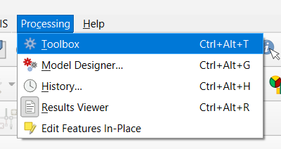
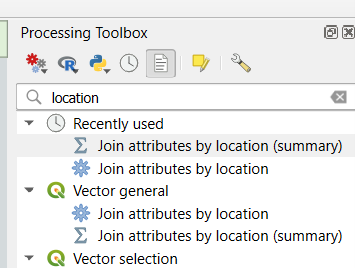
On the right-hand side of the interface, you should now see the Processing Toolbox window. In the search bar at the top of this window, type "location" and double-click Join attributes by location (summary).
A new window will appear. Configure the following settings:
- Select Edinburgh_Ward_Boundaries for Join to features in.
- Select Trees for By comparing to.
- Fields to summarise: Click the three dots (...) on the right, check the box for ID, and click OK.
- Summaries to calculate: Click the three dots (...), check the box for count, and click OK.
- Click Run.
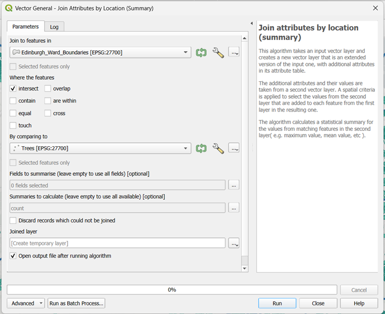
A new layer named Joined layer will appear in your Layers panel. To display the number of trees per ward using a gradient, follow these steps:
- Right-click the Joined layer and select Properties.
- On the left-hand side, select Symbology (1).
- From the dropdown menu at the top, choose Graduated (2).
- For Value, select OBJECTID_count (this represents the total count of unique trees) (3).
- For the Color ramp, choose a shade of green so that darker tones represent higher values (4).
- In the Classes section, keep the Mode as Equal Count (Quantile) (5) and the number of Classes as 5 (6).
- Click Classify (7) to generate the brackets.
- Click OK (8) to apply the changes.
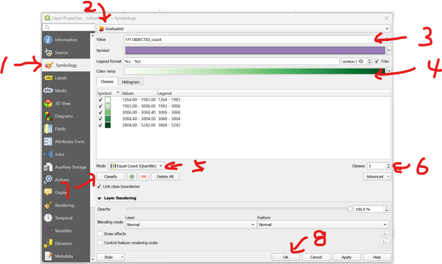
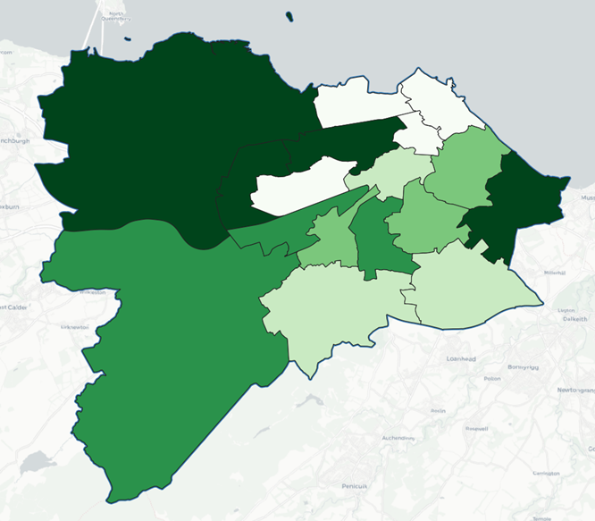
When performing join attributes by location, you might get something like this below,
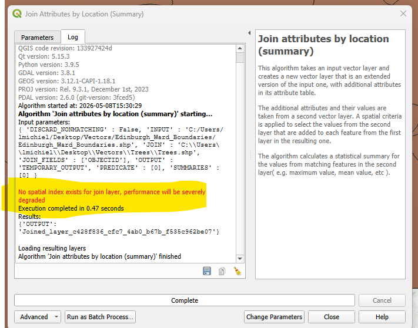
Don't worry! Keep going.
QGIS prefers references for joining. In other words, for the two layers of geoinformation that you are hoping to join with the function, QGIS is hoping each geo layer has its own id that corresponds to each other. We don't have this for the project. But because the scale is relatively small, we could accept a slight decrease in execution performance. Therefore, the red text is not important in this session.
Please continue.
Raster Aggregation
It is intuitive to count the number of trees within each polygon because individual trees are countable vector points. However, how do we handle raster data? How can we create a Choropleth Map when our source data is a continuous grid?
You may notice that if you attempt to use the "Join Attributes by Location (Summary)" tool, you cannot select raster data. Instead, we must use a different approach.
Loading and Understanding the Noise Data
The first step is to load the raster data for today’s tutorial: HORE_CONSOLIDATED_LDEN.tif. This dataset represents noise levels across Scotland.
The \(L_{den}\) (Level Day-Evening-Night) is a European standard for expressing noise levels over a 24-hour period. It is measured in decibels (dB) and applies specific "penalties" to evening and night-time noise to reflect the increased sensitivity of residents to disturbance during those hours. Essentially, it provides a weighted average that represents the total noise burden on a specific area.
- At the top of the menu bar, go to Layer > Add Layer > Add Raster Layer.
- Click the three dots (...) to the right of the "Source" box to browse.
- Navigate to the tutorial folder:
Rasters > HORE_CONSOLIDATED_LDEN.tif. - Select
HORE_CONSOLIDATED_LDEN.tifand click Open, then Add.
Once loaded, you will see in the Layers panel that the noise range varies from 0 to 87.98 dB. To help visualise the gradient across the map, we can adjust the symbology:
- Right-click the layer and select Properties.
- Select Symbology from the left-hand menu.
- Change the Render type to Singleband pseudocolor.
- Set the Min to 0 and change the Max to 90 to capture all possible values.
- Set the Interpolation to Linear.
- Choose an intuitive Colour ramp. Since loud noise is generally undesirable, a ramp ranging from blue (low noise) through green to red (high noise) is effective.
- You can further refine the classification intervals in the window below to control the dB brackets. Once satisfied, click OK.
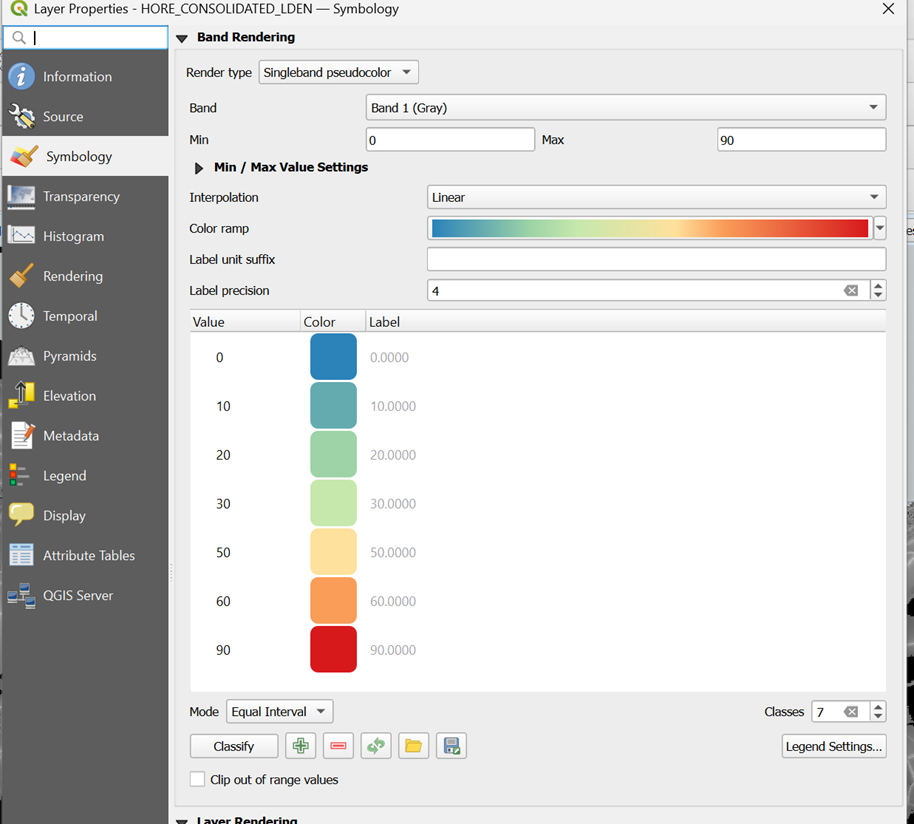
Calculating Mean Noise per Ward
How can we determine a representative average noise value for each ward boundary? The most effective method for raster data is to calculate the mean of all cells falling within each boundary using Zonal Statistics.
- Go to the Processing Toolbox and type "Zonal Statistics" in the search box.
- Double-click Zonal Statistics.
- Input layer: Choose Edinburgh_Ward_Boundaries.
- Raster layer: Choose HORE_CONSOLIDATED_LDEN.
- Statistics to calculate: Click the three dots and check mean.
- Keep the remaining settings as default and click Run.
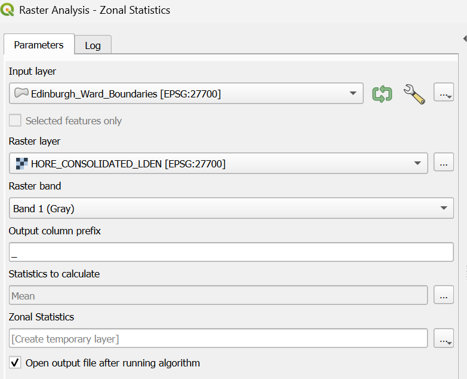
- Right-click the new layer and select Properties > Symbology.(1)
- Select Graduated from the top dropdown menu.(2)
- For Value, select _mean.(3)
- Set the Mode to Equal Interval.(4)
- Click Classify(5), then click OK.(6)
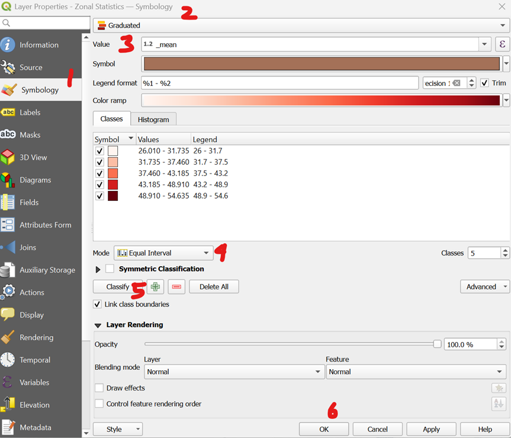
Your QGIS workspace should now clearly show which wards are noisier on average and which are quieter.
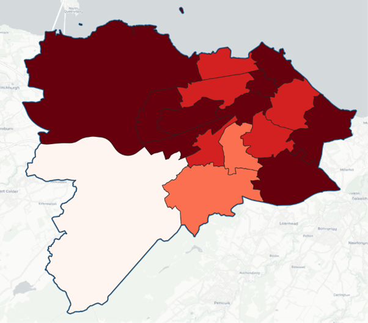
Moving Toward Statistical Inference
We now have a visual understanding of which wards have high tree counts and which suffer from higher noise levels. However, how do we move beyond visual patterns?
What if we want to know specifically if areas with more trees are associated with lower noise levels? To determine if this relationship is statistically significant—rather than just a coincidence—we need to perform an inferential statistical analysis. How can we quantify this association?
The Construction of Polygon Bins
To perform our analysis, we need to construct small sample ‘bins’ and aggregate both the tree and noise data into them. As an analogy, you can think of each bin as an individual record for which you gather information to perform statistical analysis later.
- Go to Vector > Research Tools > Create Grid.
- Grid Type: Choose Hexagon.
- Grid extent: Click the dropdown arrow on the right and choose Calculate from Layer, then select Edinburgh_Ward_Boundaries.
- Horizontal & Vertical Spacing: Input 500 for both (250m/500m are typically suitable for urban studies), ensuring the units are set to metres.
- Grid CRS: Ensure this is set to EPSG:27700 (British National Grid).
- Click Run.
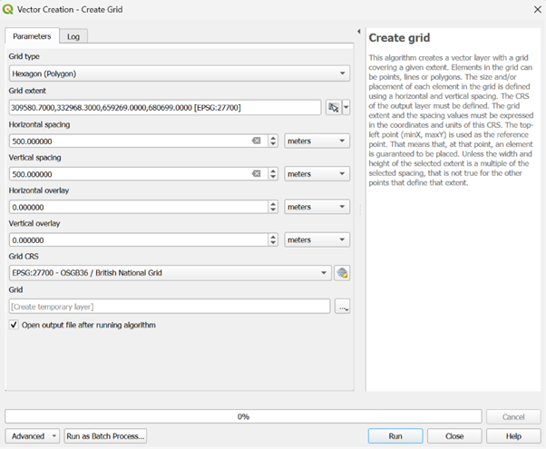
Because the extent is a large rectangle, the grid will include hexagons in the Firth of Forth or outside the city limits. We need to trim the layer to remove these unnecessary cells:
- Go to Vector > Research Tools > Select by Location.
- Select features from: Choose Grid.
- By comparing to the features from: Choose Edinburgh_Ward_Boundaries.
- Leave other settings as default and click Run.
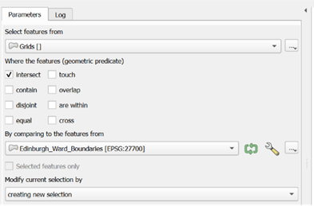
The selected hexagons will turn yellow. To save only these relevant bins:
- Right-click the Grid layer and select Export > Save Selected Features As.
- Format: Choose ESRI Shapefile.
- File Name: Click the three dots, navigate to your folder, and name the layer Grids.
- CRS: Ensure it is EPSG:27700.
- Geometry type: Select Polygon and click OK.
Now, you should have a layer like the following screenshot
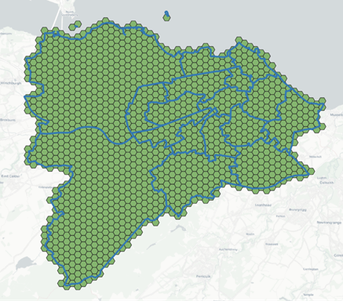
NOTE: by default, any new layer that is generated will be at the top. Therefore, this might cover anything underneath. In this case, to better visualise how the bins are related to the ward boundaries, it is worth moving your mouse to the Layers panel on the left-hand side, choose the ward boundary layer, click, hold and drag it to the top so that it sits above the bins layer, to get something like the image in the tutorial below.
Aggregation of Data into Hexagonal Bins
Now, let’s aggregate the data into these hexagonal bins. Since you have already learned how to aggregate vector and raster layers into ward boundaries, you can apply the same techniques here.
- Open the Processing Toolbox and find Join attributes by location (summary).
- Join to features in: Choose Grids.
- By comparing to: Choose Trees.
- Fields to summarise: Click the three dots and check ID.
- Summaries to calculate: Click the three dots, check count, and click OK.
- Click Run.
- Right-click the new layer to view the Attribute Table and verify the information has joined correctly.
- In the Processing Toolbox, search for and select Zonal Statistics.
- Input layer: Choose the Joined layer (the one containing your tree counts).
- Raster layer: Choose HORE_CONSOLIDATED_LDEN.
- Statistics to calculate: Click the three dots, check mean and click OK.
- Click Run.
- Open the attribute table of the resulting layer. You should see two key columns: OBJECTID_count and _mean.
- Export this as a permanent layer named Grid_Aggregated.
- Right-click the layer, select Export > Save Features As.
- Format: ESRI Shapefile.
- CRS: EPSG:27700.
Cleaning Data in QGIS
You will notice many NULL values in the attribute table. In statistical software (such as R), NULL represents "unknown" or "missing" data, which can lead to unreliable conclusions. In this case, a NULL simply means "no trees were found in this hexagon," so we should convert these to 0.
- Right-click the Grid_Aggregated layer and open the Attribute Table.
- Click the Pencil icon (top left) to toggle Editing Mode.
- Open the Field Calculator (the abacus icon).
- Check Update existing field and select OBJECTID_count.
- In the Expression box, enter:
coalesce("OBJECTID_count", 0). This replaces any NULL with 0 while keeping existing numbers as they are. - Click OK (or Apply).
- Click the Pencil icon again to save your changes and exit editing mode.
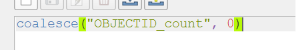
Exploration of Spatial Relationship in QGIS
There are many ways to run correlations between variables. You could export the aggregated layer as a CSV file to analyse it using external software. You can then use this file for further analysis in R, Python, or even SPSS.
- Right-click the layer containing your aggregated data (Grid_Aggregated) and select Export > Save Features As.
- For the format, choose Comma Separated Value [CSV].
- Click the three dots next to the file name box, navigate to your desired folder path, and name the file Aggregated_Geographies.
However, if you simply want a quick exploration of the correlation between these variables, you can utilise the Python console within QGIS.
- Press Ctrl + Alt + P to open the Python console window.
- Copy and paste the code block below into the input line at the bottom of the console:
from qgis.core import QgsProject
from scipy import stats
# 1. Configuration - Matching your exact field names
layer_name = 'Grid_Aggregated'
tree_field = 'OBJECTID_c' # Matched to your log output
noise_field = '_mean'
layers = QgsProject.instance().mapLayersByName(layer_name)
if not layers:
print(f"ERROR: Layer '{layer_name}' not found.")
else:
layer = layers[0]
fields = [field.name() for field in layer.fields()]
if tree_field not in fields:
print(f"ERROR: Column '{tree_field}' not found. Available: {fields}")
else:
trees = []
noise = []
# 2. Extract and Clean Data
for f in layer.getFeatures():
t_val = f[tree_field] if f[tree_field] is not None else 0
n_val = f[noise_field]
# Skip rows where noise is 0 or NULL
if n_val is not None and n_val > 0:
trees.append(t_val)
noise.append(n_val)
# 3. Calculate Correlation
if len(trees) > 5:
rho, p_val = stats.spearmanr(trees, noise)
print("\n" + "="*45)
print(" EDINBURGH TREE & NOISE CORRELATION")
print("="*45)
print(f"Hexagons Sampled: {len(trees)}")
print(f"Spearman's Rho (ρ): {rho:.4f}")
print(f"P-Value: {p_val:.4e}")
print("-" * 45)
if p_val < 0.05:
sig_status = "STATISTICALLY SIGNIFICANT"
direction = "NEGATIVE (Less noise where more trees)" if rho < 0 else "POSITIVE (More trees in noisy areas)"
else:
sig_status = "NOT STATISTICALLY SIGNIFICANT"
direction = "No reliable pattern found."
print(f"Significance: {sig_status}")
print(f"Conclusion: {direction}")
print("="*45)- After pasting the code, click the play button to run the script.
Essentially, you are running a Spearman’s Rho correlation to see if hexagons with more trees tend to be noisier or quieter. To our surprise, the Spearman's Rho is 0.0587. This value represents the strength and direction of the relationship. Because the number is positive, it means that as one variable increases, the other tends to increase as well. In this context: hexagons with higher noise levels also tend to have a higher density of trees.
In terms of strength, on a scale of 0 to 1, 0.0587 is very weak. While the trend exists, it is not a "tight" relationship; there are plenty of noisy areas with few trees and quiet areas with many trees that don't fit this rule. The p-value is approximately 0.0427. In statistics, the standard threshold for "significance" is usually 0.05. Since 0.0427 is less than 0.05, the result is considered statistically significant. This means there is less than a 5% chance that this positive relationship happened by pure accident. The pattern, though weak, is "real" within your dataset of more than 1,000 hexagons.
Notes
The conclusion "More trees in noisy areas" might seem like a mistake, but it reflects the urban reality of Edinburgh. This might be because of roadside planting. Specifically, many of Edinburgh’s noisiest areas are major arterial roads or "A-roads" which often have significant "street tree" planting or wooded verges specifically designed to shield nearby houses. Very quiet areas might be open paved squares or industrial zones with no trees, while the busier, noisier residential corridors often have mature private gardens or public parks nearby.
While the results of our Spearman analysis give us a fascinating starting point, it is important to treat these figures as an exploratory step rather than a final answer. The biggest challenge when using simple correlations for geography is a concept called spatial dependency (or spatial autocorrelation). Standard statistics assume that each of our 1,193 hexagons is an independent "island" that doesn't affect its neighbour. In reality, we know that if a hexagon covers a busy road like Princes Street, the hexagons next to it will also be noisy. This "bleeding" of data across boundaries violates the basic rules of standard correlation, which can sometimes make relationships look significant when they are actually just a byproduct of how the city is laid out.
To truly address these issues, more advanced spatial correlation methods are needed. Techniques such as Geographically Weighted Regression (GWR) or Bivariate Local Moran’s I allow the computer to look at how the relationship between trees and noise changes from one neighbourhood to another. Please refer to the references below for more information.
For students, the takeaway is clear: a Spearman correlation is a brilliant tool for "spotting" a pattern, but spatial tools are required to "prove" it by accounting for the complex, overlapping layers of a living city.
Please note that these are analysis in development by the training institute.
Thank you for your time and we look forward to seeing you in future teaching sessions.
References
Environmental data provided for the City of Edinburgh (SilentDiscoGeo). Analysis and geospatial training provided by the training institute.
Bivariate Local Moran’s I is a spatial statistic used to measure spatial autocorrelation, helping to identify "hot spots" or clusters where the relationship between two variables (e.g., trees and noise) is non-random across space.
- Tutorials for Moran's I: Introduction to Moran's I Example
Geographically Weighted Regression (GWR) is a local form of linear regression used to model spatially varying relationships, allowing the coefficients of the model to change across the study area rather than assuming a single global relationship.
- Tutorials for GWR: PySAL GWR Documentation and Tutorials